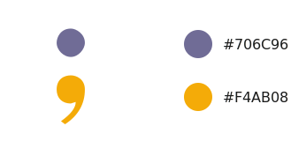
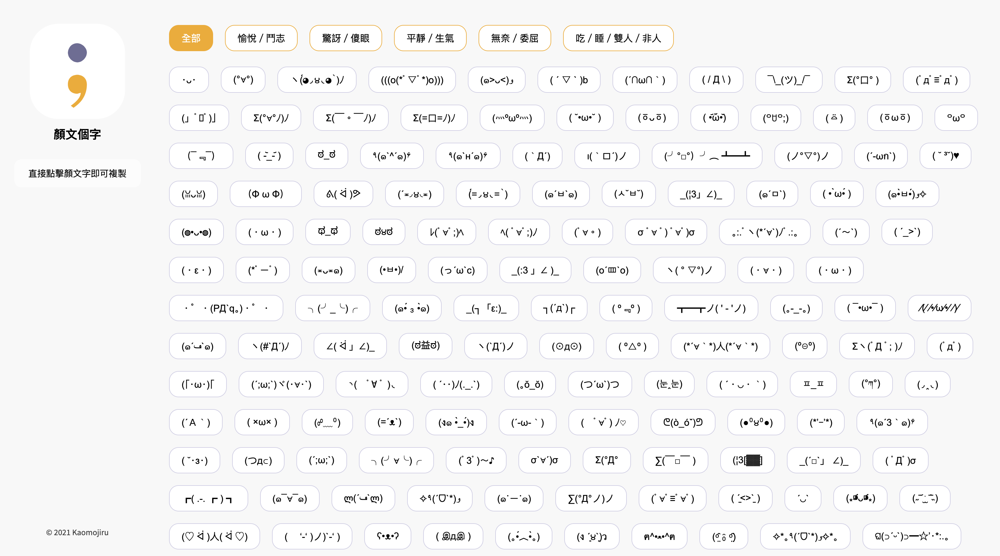
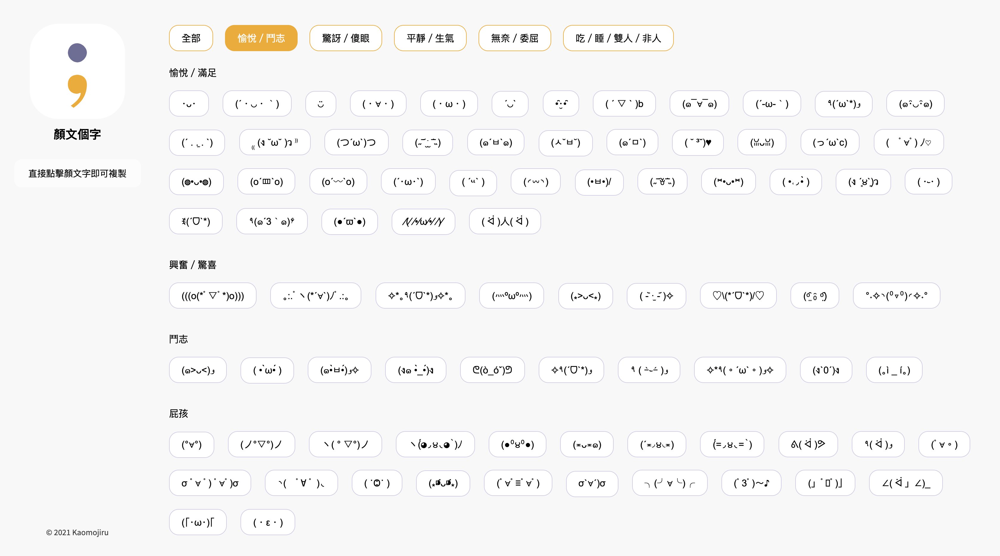
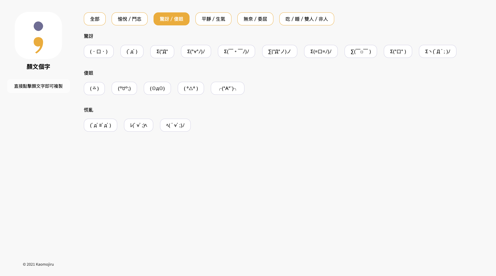
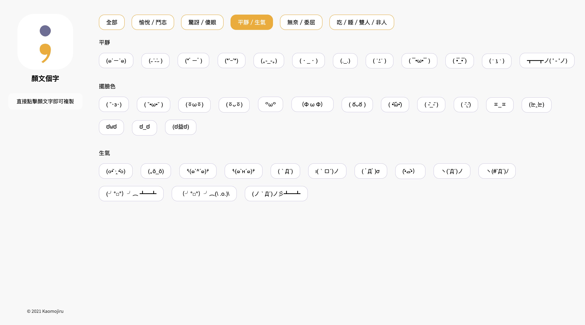
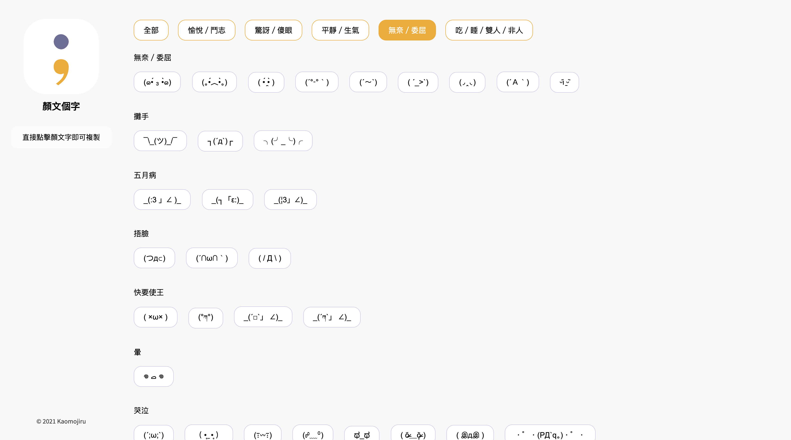
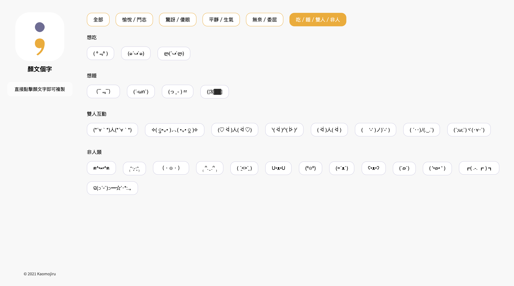
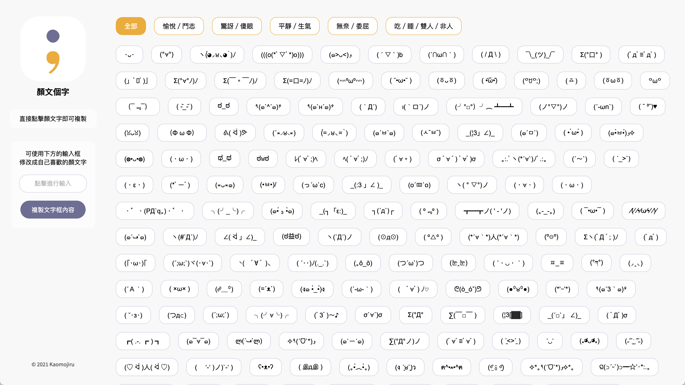

網址
Address
背景
Background
我曾經被推薦下載使用「糰子顏文字」這個在App Store上的App，下載後就能夠在iPhone上新增一個鍵盤，裡面有許多的顏文字，可以點擊直接輸入，這讓我建立起了一些輸入習慣，也就是在想要表達某些特定情緒時，固定使用糰子顏文字裡有的特定顏文字來表達；然而在iOS14更新後，這個App再也無法啟用這個鍵盤，使得當我之後還想要使用同樣的顏文字來表達情緒時變得非常麻煩：我需要設法使用關鍵字來搜尋出寫了這個顏文字的網站，選取並複製這個顏文字，再返回我原本的輸入來貼上。
我與團隊夥伴的iOS工程師Tate說明了這個想法，並鼓勵他若希望能有一些小的Sideproject，可以考慮開發這個App；而我考慮了當我的輸入平台是電腦時，也會需要使用關鍵字搜尋顏文字來複製貼上輸入表達，加上自己有一點學習前端切版的意願，因此決定自己設計並切出一個功能單純的網頁，方便自己存放並找到自己想要使用的顏文字。
目標
Goal
除了「讓我自己可以收藏並方便取用顏文字」之外，我為這個網站設定了另外兩個大目標，一個是希望它未來能夠協助推廣之後Tate開發出來的iOS App ，另一個是希望它可以展現顏文字的魅力。為了達成這兩個大目標，我分別設定了希望能因此達到這兩個目標的小原則：
- 網站上直接呈現未來iOS App會使用的App Icon。
- 整個網站有明確、好辨識、有區別度的配色。
- 顏文字的分類方式即等於未來iOS App的鍵盤中的顏文字分類方式。
- 網站上有可以連結到iOS App的下載頁的管道。
- 一進到網站就能看到很多很多的顏文字。
- 都是有明確的要表達的情緒的顏文字。
- 不想包含風格呈現上太過破碎的顏文字。
- 顏文字的分類方式主要以「所傳達的情緒」區分。
Lo-Fi Wireframes
品牌識別
Branding

另外，我希望從名稱上就能看出這個網站主要的內容會是什麼，所以還是希望「顏文字」三個字能入名，但是又不希望字數太多，也想到了「將『顏文字』變成動詞」的構想，在「顏文字」中加入「個」，是「顏文字一下」的概念。
為了讓這個網站的網址也能是這個品牌名，「顏文個字」勢必還是需要有英文版的名字；「顏文字」原本就是日文，所以我決定以日文的概念發想，再以羅馬拼音呈現而成它的英文版名字；如果沿用「將『顏文字』變成動詞」的概念，日文中許多的動詞皆是以「るru」結尾，所以我決定直接在「顏文字」後加上「る」形成「顔文字る」，再以羅馬拼音呈現，而成「Kaomojiru」。
Hi-Fi Wireframes






臨時追加的小功能
A little additional feature
在畫出Hi-Fi wireframes後，我覺得在左方側邊欄下方，在尚未放上「iOS版連結QR code」之前好像有一點空；再想到自己去其他網站尋找顏文字的經驗，想起自己有時找到顏文字後，會因為「想要把一些零碎的符號刪掉」或是「修改其中的某些符號」，而需要找到一個輸入格來讓自己編輯一下找到的顏文字；通常最直接的地方就是瀏覽器本身的網址列，並且我在輸入並修改後，會需要再反白選取剛剛修改好的顏文字，再ctrl+c複製。於是我想到一個點子是，何不在左方側邊欄中加上一個單純的輸入格，並且下方附上一個能夠直接點擊就能複製輸入格內容的按鈕，可以讓「編輯顏文字」的這件事情，是在網站內本身即可完成，而非必須找到另外的管道，同時也省去「反白選取」及「ctrl+c」的動作。

iOS App